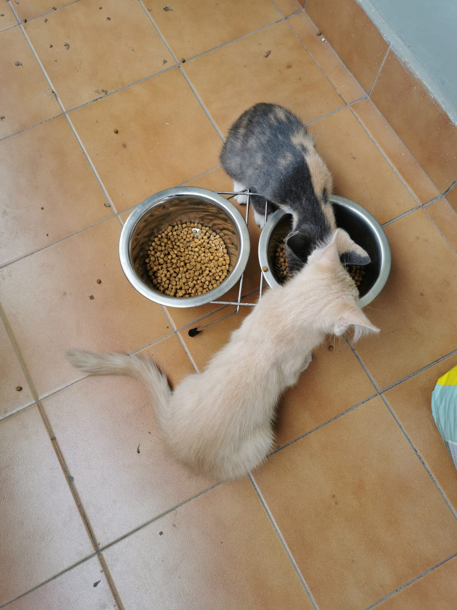
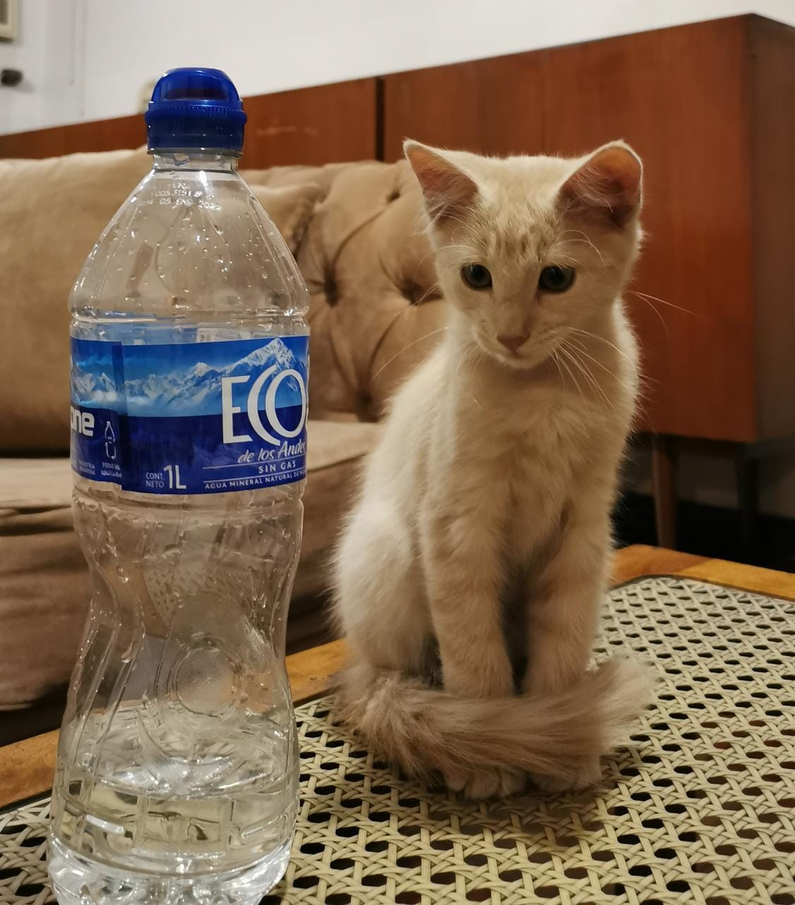
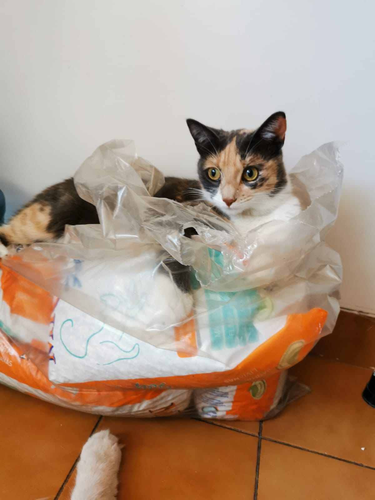
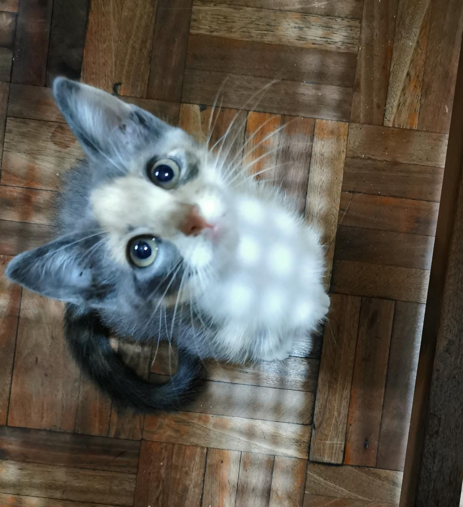
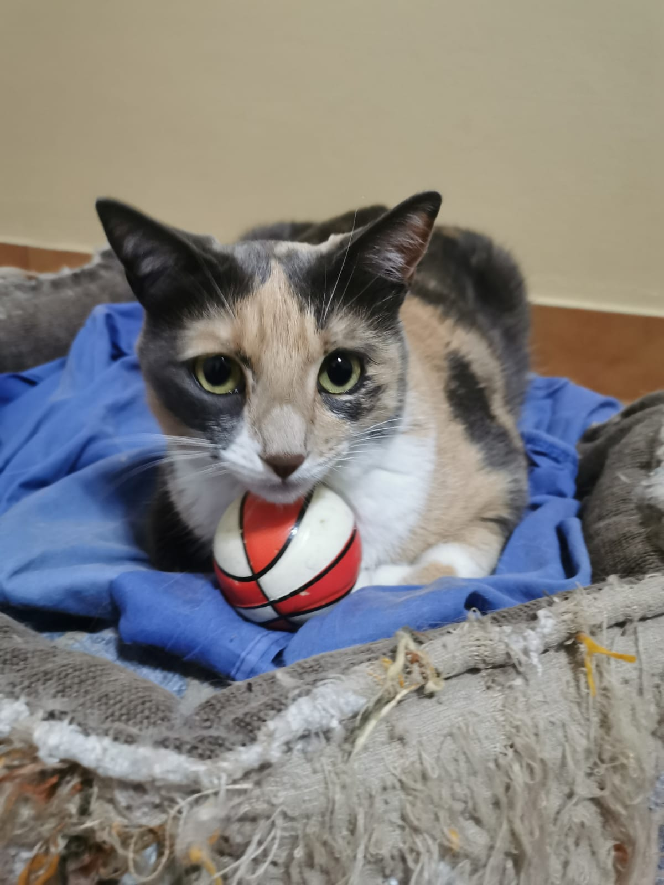
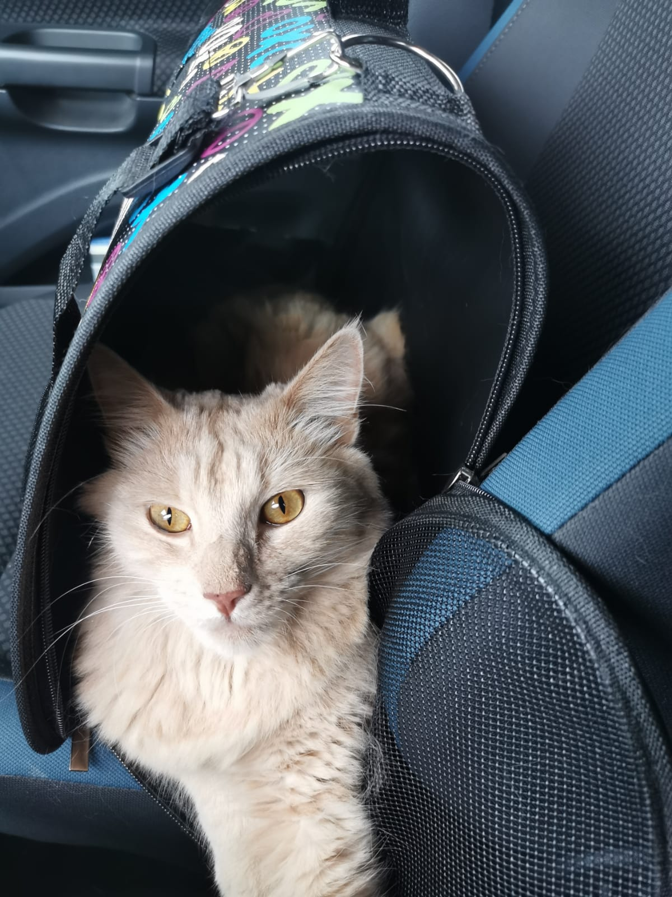

Alimentación
Siempre de calidad y adaptada a sus etapas de vida. Los gatitos tienen necesidades nutricionales distintas a las de los gatos adultos, centradas en fomentar su correcto desarrollo y crecimiento, y además el número de sus tomas diarias suele ser más frecuente. A partir del año, el gato se considera adulto, y suele necesitar alimentos menos calóricos para evitar el posible sobrepeso, u otras variedades de producto que respondan a un nuevo estadio (ej. Esterilización). En ambos casos, gatitos y adultos, lo más recomendable es acostumbrarlos a combinar la alimentación seca con la húmeda (latas o sobres). La alimentación húmeda de calidad contiene un mayor porcentaje de agua (aproximadamente, un 80% que se traduce en un buen nivel de hidratación), y más proteínas magras. Además, la alimentación húmeda les aporta otros beneficios adicionales, como la variedad (múltiple combinación de ingredientes), y la estimulación de su curiosidad sensorial (recetas con texturas para todo tipo de paladares).
Otra opción no menos importante a tener en cuenta es la dieta BARF que, según estudios científicos, es otro método para acondicionar la dieta de tu felino de forma más saludable. BARF es la sigla de Biologically Appropriate Raw Food. Conocida en castellano como ACBA o Alimentación Cruda Biológicamente Adecuada, es una opción compuesta principalmente por productos crudos, de acuerdo con la dieta ancestral de los felinos. La dieta BARF, desarrollada en 1993 por el veterinario australiano Ian Billinghurst, se basa en ideas muy concretas.Es la alimentación propia de los animales salvajes y la que mejor asimila su organismo. Se compone de carne cruda, vísceras, huesos y, en menor medida, de vegetales crudos. El objetivo de la dieta se centra en maximizar la salud y la longevidad de los animales. Pretende minimizar la necesidad de la intervención veterinaria. Es una alternativa saludable ya que se considera que la alimentación artificial contiene harinas, colorantes y otros aditivos, que pueden ser causante de diversos trastornos de salud, como las alergias y la obesidad.
Agua
Los gatos no tienen el instinto de beber mucho, porque en la naturaleza obtienen la mayor parte del agua que necesitan al consumir a sus presas. Los gatos que viven en interiores no pueden cazar pájaros ni roedores y, a menudo, solo se les alimenta con alimentos secos, lo que significa que deben beber mucha agua para mantenerse hidratados. Mantenerse hidratado es clave para prevenir enfermedades renales y del tracto urinario. Cuando los gatos no beben lo suficiente, los minerales de la orina comienzan a cristalizarse y a formar piedras, lo que puede poner en grave peligro la salud de tu felino. Ante esto es importante tener en cuenta incorporar a los elementos de tu michito una fuente de agua con filtro que eliminen el exceso de calcio y magnesio u otro tipo de minerales que pueda contener el agua y que lleguen a ser perjudicial en exceso. Lo más importante es que siempre esté limpia, en abundancia e idealmente servida en bebederos de acero inoxidable o aluminio. En verano, ubica varios bebederos de estas características en distintos lugares de tu casa, para que tu gato siempre tenga agua a mano si quiere beber.
Mantenimiento óptimo del arenero
Adquiere un arenero que se adapte bien a sus dimensiones, sobre todo cuando tu gato ya haya alcanzado su etapa adulta. Colócalo en un lugar tranquilo, alejado de la zona de alimentación, bebida y relax. Con ayuda de una pala retira sus deposiciones diarias, y cambia la arena o piedras sanitarias con una frecuencia semanal.
Cuando desarrolles esta tarea, procede a limpiar el arenero con algún producto desinfectante lo más neutro posible y nunca tóxico, para evitar que quede algún rastro que pueda incomodar a tu gato. Aprovecha estas labores para confirmar que el aspecto de las heces de tu gato no muestra ninguna alteración por la que debas preocuparte.
Por conocimiento de causa, lo más recomendable es utilizar piedritas sanitarias en vez de arena ya que genera menos olores, es más absorvente (y por lo tanto más rendidor y económico) que la arena, lo que impedirá que tu michi se ensucie en la utilización de su arenero.
Uñas y patas
Acostúmbralo a limarse las uñas en un rascador desde que es gatito. Ésta es la mejor solución para que no recurra a hacerlo en sofás, cortinas y muebles. Añade a este aspecto la rutina del corte de uñas. Ciertamente, puede ser una labor compleja y estresante para tu gato y para ti, pero en tiendas especializadas en mascotas puedes adquirir tijeras seguras que impedirán que puedas dañar alguno de sus nervios. Si te ves muy apurado, aprovecha una de las visitas al veterinario para que te explique cómo llevar a cabo el corte de uñas en las condiciones más favorables para ambos. Pon especial atención en las almohadillas de las patas, sobre todo durante la temporada estival, en la que pueden verse expuestas a quemaduras debido al contacto con superficies excesivamente calientes.
Ejercítalo mediante el juego
No es necesario que le compres un super parque de juego. Con imaginación y algunos remedios caseros, puedes construirle elementos que lo incentiven a jugar e interactuar contigo, tales como pelotas de trapo, cajas de cartón con distintos niveles, o premiarle con juguetes tipo ratitas que despertarán sus instintos naturales de caza.
 El cepillado
Totalmente imprescindible si tienes un gato con pelo semi largo o largo. Busca aquel momento en el que lo intuyas más tranquilo y predispuesto al contacto contigo, y aprovecha para convertir la rutina del cepillado en una tarea habitual.
En tiendas especializadas en mascotas puedes encontrar la mejor opción de cepillo para cubrir las características de tu gato, teniendo en cuenta que la finalidad es eliminar el exceso de pelo muerto y la consecuente formación de nudos o bolas de pelo en el estómago.
Visitas periodicas al veterinario
No olvides que los gatos, como ocurre con los perros, también necesitan tener su cartilla de vacunas en regla y pasar por los procesos de desparasitación (interna y externa). Los veterinarios suelen aprovechar estas visitas para realizarle una exploración completa a tu gato, inspeccionando sus oídos, estado de sus dientes, aparición de posibles masas, estado de la piel, pelo y ojos. Este aspecto, de carácter preventivo, ayudará a que tu gato goce de una salud extraordinaria, y te confirmará que está excelentemente bien cuidado.
Para trasladar a tu michi de un lugar a otro te recomendamos que utilices las transportadoras para gatos, ya que los michitos se sienten más seguros y protegidos en un ambiente cerrado y pequeño, además les quita el estres y pueden estar dentro de un espacio lleno de su olorcito.
